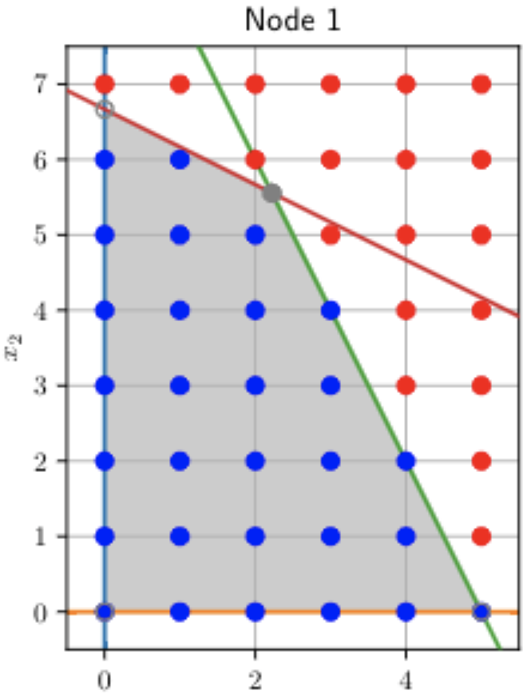

Companion Notebooks for Mathematical Optimization
Pyomo Style Guide
1. Mathematical Optimization
Alice’s Rose
Scenario Analysis: Pop Up Shop
2. Linear Optimization
Least Absolute Deviation (LAD) Regression
A Wine Quality Dataset
Transportation Models
Making the Best of the Worst
Download Historical Stock Data
MAD Portfolio Optimization
Fractional BIM
Caroline’s raw material planning
3. Mixed Integer Linear Programming
Cryptarithms: Send More Money
Strip Packing: Placing Boxes on a Shelf
Production Model with Disjuncts
Recharging Strategy for an Electric Vehicle
Shift Scheduling
Machine Scheduling
Job Shop Scheduling
Maintenance Planning
BIM Production
4. Network Optimization
Forex Arbitrage
Crypto Currency Analysis
5. Convex Optimization
6. Conic Optimization
7. Accounting for Uncertainty: Optimization Meets Reality
8. Robust Optimization - Single Stage Problems
Companion notebook to EF’s training on optimization with data uncertainty
9. Stochastic Optimization - Single Stage Problems
10. Robust Optimization - Two Stage Problems
11. Stochastic Optimization - Two Stage Problems
repository
open issue
Index